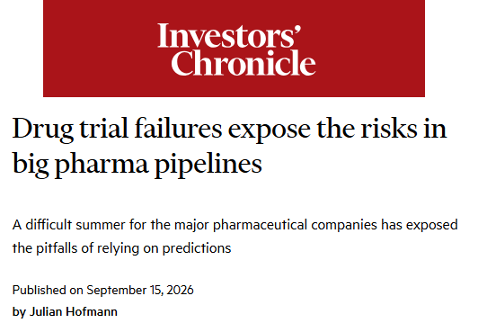
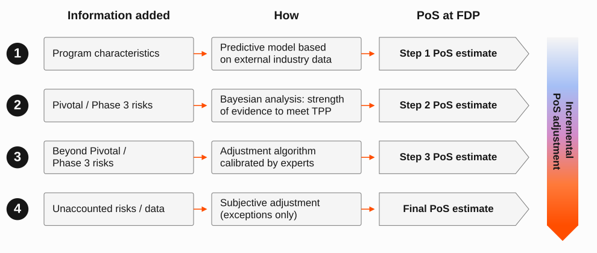
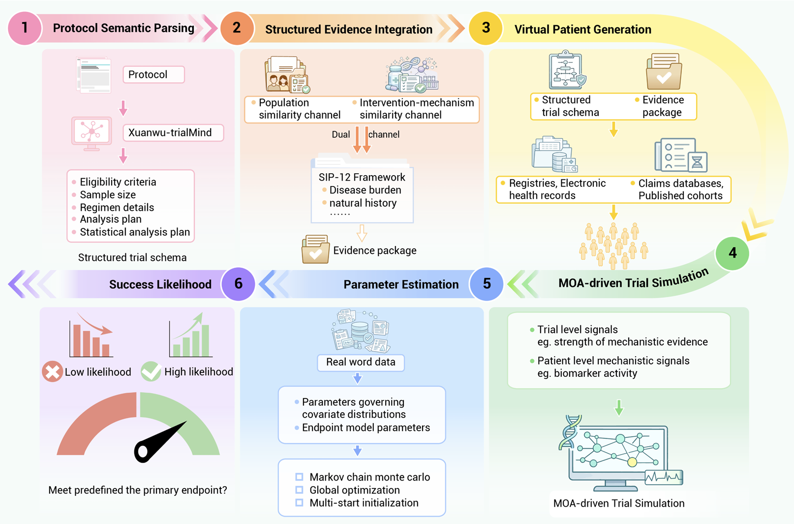
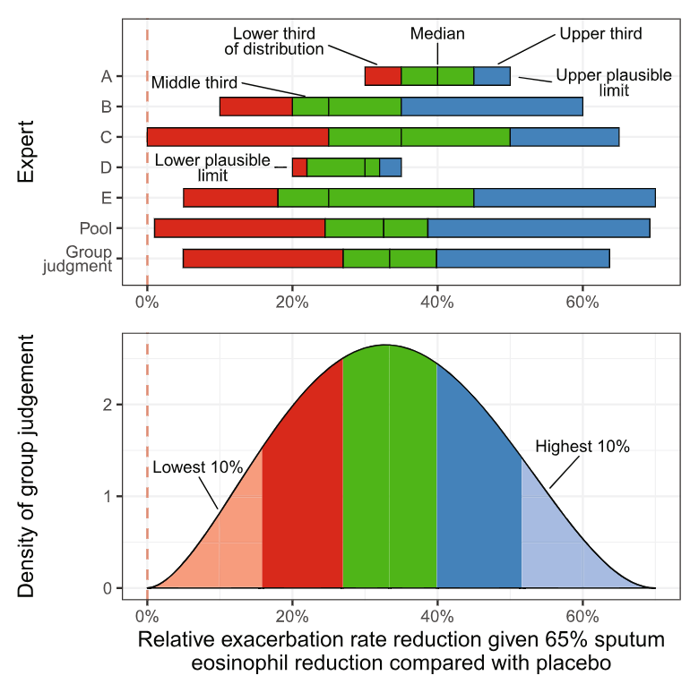
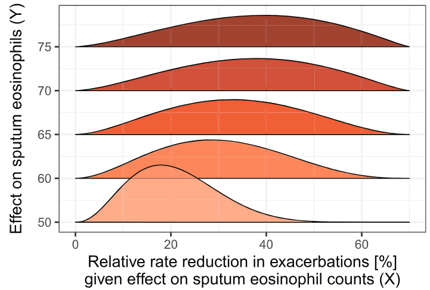
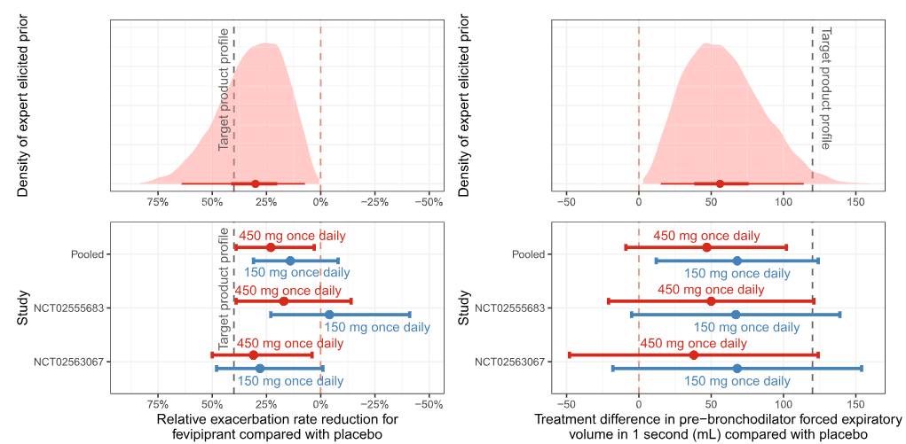
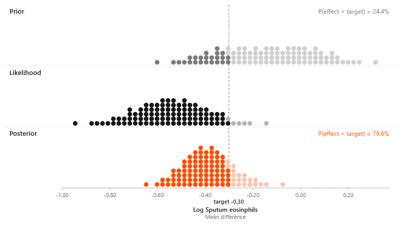
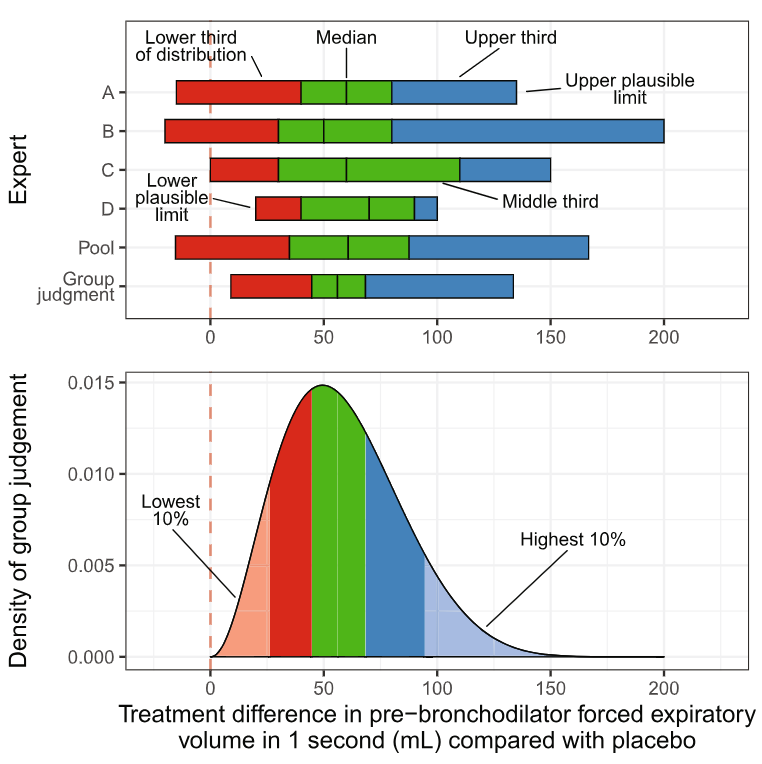

How sure are we?
Evidence-based Probability of Success (PoS) in late-stage drug development: experience from an applied statistician in industry
Rutgers Biostatistics and Epidemiology Lecture Series
2026-10-12
Disclaimer
The opinions expressed in this presentation and on the following slides are solely of the presenter, and not necessarily those of Novartis.
Why this talk
This is not a methods talk
It is a tour of three practical problems behind one applied question: how likely is this drug to succeed?
1 · Define the target
What exactly are we predicting? "Success" has to be an estimand, defined clearly and consistently across programs.
2 · Choose the relevant evidence
Historical benchmarks, Phase-2 data, and expert judgement: how do we choose and utilize the most relevant evidence?
3 · Communicate uncertainty
Decision-makers need an assessment they can trust, probe, and compare, not a black box.
Much of the day-to-day work of an industry statistician sits here, rather than in the details of the modelling.
Pharmaceutical R&D investment is high risk
Bringing a new drug to market is a highly competitive, low-probability endeavor.
Cumulative likelihood of regulatory approval is:
- Low: below 10% (Wong et al. 2018)
- Highly variable across disease areas (Wong et al. 2021)
- Declining (Chancellor 2024)
Failure is costly
Especially late-stage trials represent a substantial sunk cost

Hofmann (2026)
When are investment decisions made?
Our most rigorous statistical thinking is applied before Phase 3: when data is richest, and when the required investment is largest.
Defining the target
What we mean by “success”
Probability of Success (PoS) is the probability that a program ultimately achieves regulatory approval and meets its Target Product Profile (TPP).
- The TPP is the pre-specified set of efficacy, safety, and other attributes a drug must show to be worth developing: the estimand for PoS
- One definition, applied the same way across programs, so numbers are comparable
- Our mindset: seek truth from hard evidence and scientific rigor, using all available data
A framework for late-stage programs
Our framework entails 4 steps

Developed in 2019 for pivotal-stage PoS (Hampson et al. 2022) and since applied across the portfolio. Program-specific evidence is used wherever it exists: a generic benchmark alone would discard it.
Why not pure AI/ML?

Advocacy for black-box, AI-driven prediction is increasingly loud. Example of an LLM-driven pipeline (Zhang et al. 2026).
Our stakeholders value a “white box” approach: transparent, traceable, and open to challenge by the people who must act on it.
The core idea: Bayesian synthesis
A posterior estimate of treatment effect combines the prior belief with pre-pivotal clinical data
- For most programs this is the most influential step of the assessment
- Next: where the prior comes from, then the update itself
Where does the prior come from?
Our default stance is often skeptical, driven by industry benchmarks for (often low) success rates of similar programs.
How we derive benchmarks
Data
- Large cross-industry dataset: >10K programs, US, EU and Japanese markets
Models
- Three models, one per phase transition
- Developed internally, validated via time-adjusted cross-validation
Caveats
- Past programs are not this program: selection, secular trends, transportability
The program benchmark alone does not comprise the assessment. It sets what we believe before looking at the program’s own data.
Benchmark-calibrated prior
The prior is a Gaussian mixture: the weight on optimistic vs. pessimistic components is calibrated to match the benchmark success rates.
Illustrating the Bayesian calculus
When the Phase 3 endpoints match Phase 2, predicting Phase 3 is a straightforward Bayesian update.
From efficacy to program-level PoS
We simulate the program many times from the efficacy model, combined with a consensus assessment of non-efficacy risks (regulatory, safety, quality, technical), and classify each replicate.
When evidence is indirect: a worked example
Fevipiprant for asthma
Holzhauer et al. (2022)
Phase 3 ongoing, pre-readout. Success rule: significance (1 dose) on both exacerbations & FEV1, in both trials.
| Endpoint | Quantity of interest | Available Phase 2 evidence |
|---|---|---|
| Exacerbations | Treatment effect on annualised rate of moderate-to-severe exacerbations: the Phase 3 primary endpoint | None directly: only a surrogate (reduction in sputum eosinophil counts) in one Phase 2 trial |
| FEV1 | Treatment effect on FEV1: a Phase 3 key secondary endpoint | Several Phase 2 studies, but shorter trials in a milder asthma population |
- Neither endpoint’s Phase 2 evidence matches its Phase 3 role: evidence had to be bridged, not carried forward
- Both treatment effects were elicited, informed by indirect data, and we needed a joint prior for two correlated endpoints
Structuring the elicitation
The SHeffield ELicitation Framework (SHELF) protocol (Gosling 2018)
- Informal elicitation invites well-known sources of bias, so important judgements warrant a formal protocol.
- SHELF combines individual and group elicitation to produce a single consensus distribution for each quantity of interest (QoI).
Workshop structure of the basic SHELF protocol.
Eliciting the marginal: exacerbations

Four experts give range, median, and tertiles independently; and a follow-up facilitated discussion produces a single group judgement.
Eliciting the dependence between endpoints

Repeating the exacerbations elicitation at several assumed eosinophil effects (50-75%) traces out the conditional distributions needed to capture dependence between the two endpoints.
Final prediction of pivotal efficacy
- Combining the marginals with the elicited dependence yields a single joint prior for both treatment effects, feeding the same simulation machinery as before.
Predictive distribution for each endpoint’s Phase 3 treatment effect, with P(effect beats target).
What did the PoS say?
- The resulting PoS reflected genuine skepticism: the TPP did not appear attainable based on the available evidence.
- Significance, approval & market access5%
- Approval without market access5%
- Significance but safety showstopper2%
- Significance & safe, but not approved0%
- Insufficient efficacy (no significance)88%
What happened?

Elicited prior (top) vs. realized Phase 3 results by dose and study (bottom), for exacerbations (left) and FEV1 (right) (Holzhauer et al. 2022).
Reflections
Takeaways
- Framing is most of the work. What is the target, and which evidence is relevant to it, matter more than the choice of model.
- Embrace uncertainty explicitly. Priors, bridging assumptions, and expert judgement all go on the table, in documented form.
- Transparency is paramount when people must act on the number and defend it.
- Drug development is hard and pivotal failures are impactful. Rigor and objectivity are what make PoS predictions reliable.
Limitations and open questions
Limitations
- Benchmarks describe past programs, not this one
- Elicitation is structured, but remains judgement
- A single program is a one-off event: PoS can only be checked in aggregate
Open questions
- Improvements on the concept of calibrated benchmark priors
- Bridging models from surrogates to clinical endpoints, and across populations
- Effective visual communication of uncertainty to decision-makers
Acknowledgements
Quantitative PoS team, including
- Markus Lange
- Björn Holzhauer
- Joseph Kahn
- Alex Przybylski
- Steffen Ballerstedt
And other colleagues
- Lisa Hampson
- David Ohlssen
- Andrew Wright
- Zhenwei Yang
- Lou Whitehead
References
Backup
Who is PoS for?
PoS serves wide-ranging stakeholders across the company
| Stakeholder | Decisions | What they need from PoS |
|---|---|---|
| Portfolio / Finance | Valuation, prioritisation, resource allocation | Comparability across assets; a consistent, benchmarkable definition |
| Governance | Tollgate decisions | A defensible, reproducible, auditable assessment |
| Leadership | Risk evaluation and communication, go/no-go | Where the risk sits, and how it changes with new evidence |
| Project teams | Design decisions: sample size, endpoints, TPP, number of trials | Sensitivity of PoS to design levers; the value of more data |
Step 3 · Post-pivotal risks
Conditional on a positive pivotal program on the key endpoints, with no major safety showstopper, what is the remaining probability of ultimate success?
Five factors are each scored via consensus among the project team
| Risk factor | Low | Medium | High |
|---|---|---|---|
| Alignment with key regulator | Clear agreement or strong positive feedback | Generally positive feedback, but unresolved issues | Inadequate discussion or important disagreement |
| Unaccounted safety risks | No known unaccounted safety risks | Some known risks, but limited relevance to the program | Significant risks likely to apply to the program |
| Quality & compliance risks | Low expected risk | Medium expected risk | High expected risk |
| Technical development risks | No major known technical risks; pre- and post-pivotal products very similar | Some meaningful technical risks or product differences | Multiple or significant technical risks |
| Unaccounted TPP risks | Low risk of missing important additional TPP features | Medium risk | High risk, even assuming key pivotal endpoints are met |
Step 4 · Manual adjustment
To account for any information not captured in Steps 1-3, teams may override the computed PoS with a written, documented, agreed-upon rationale
Legitimate uses
- Safety risk already discharged by a large program in another indication
- Regulatory precedent the benchmark cannot see
- Known bridging issues between pre-pivotal and pivotal populations
Not legitimate
- "The number looks low"
- Undocumented optimism
- Re-litigating the TPP after the fact
Fevipiprant: what direct Phase 2 data existed?
Direct Phase 2 trial data exists only for the surrogate: sputum eosinophils

A standard Bayesian update for the surrogate: prior 24% → posterior 80% probability that the effect exceeds the target.
Fevipiprant: eliciting the FEV1 marginal

Four experts give range, median, and tertiles independently; these are pooled into a single group judgement distribution.

Probability of Success in Late-Stage Drug Development